PORTFOLIO

 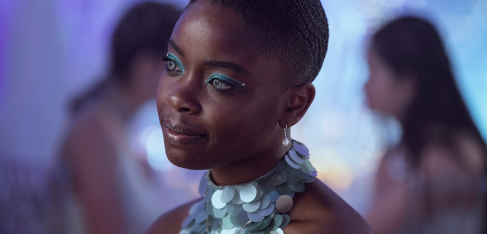
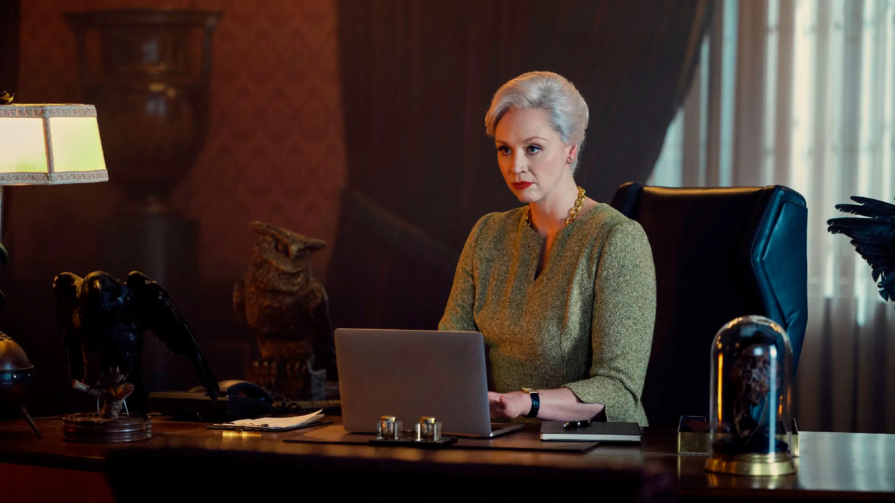
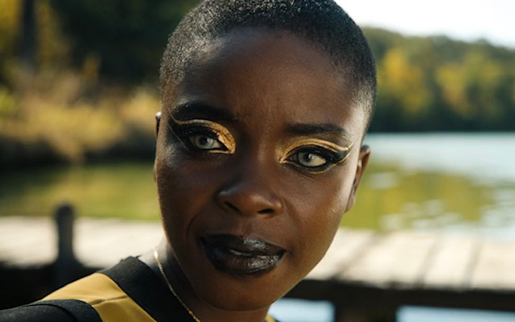
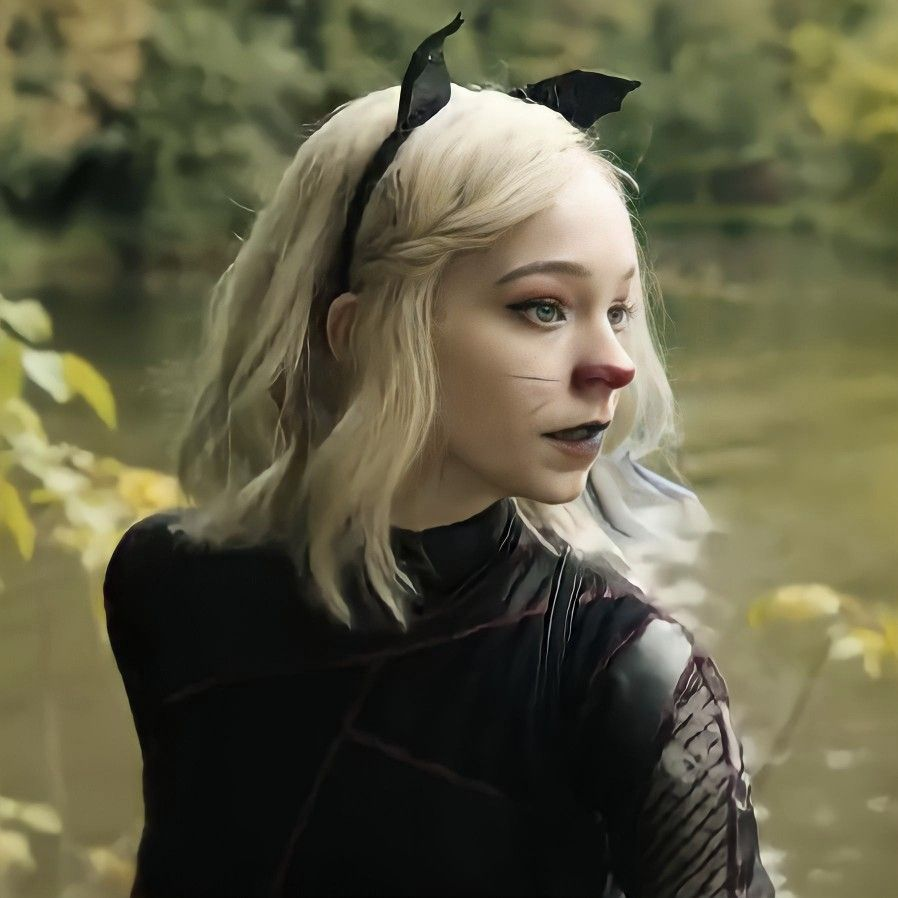
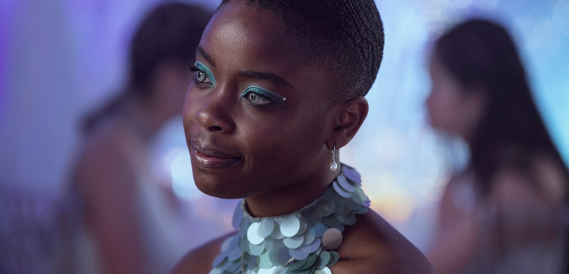
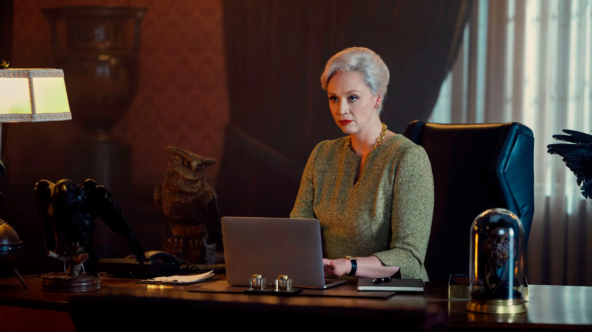
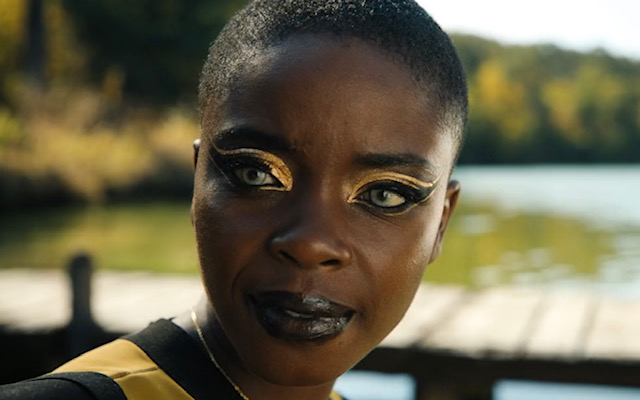
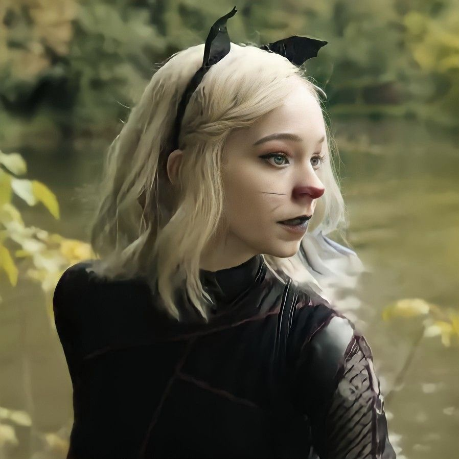

Hola, soy Natalia Leone. Soy estilista y maquilladora profesional con más de 20 años de trayectoria en el mundo del espectáculo y del cine. Trabajé con personalidades de la TV Argentina, como Susana Giménez y con famosos de talla internacional, como la actríz de Hollywood, Catherine Zeta-Jones. Mi trabajo reciente más reconocido fue en la serie de Netflix, "Merlina" (2022).
Nací en Buenos Aires (Argentina), y a los 10 años emigré con mi familia a Los Ángeles (California), donde encontré mi pasión en el arte y el espectáculo. A mis 18 años comencé a trabajar en proyectos de cine y en 1998 tuve la oportunidad de desempeñarme en uno de los proyectos más importantes en mi carrera como maquillista, en la película "La Máscara del Zorro".
Luego de esta película tuve el honor de trabajar por varios años como estilista y maquilladora de la actríz Catherine Zeta-Jones, hasta que en el año 2005 volví a mi país para trabajar con artistas argentinos del momento, donde tuve la oportunidad de trabajar con Susana Giménez, personalidad muy reconocida de la tv y el espectáculo argentino.
Allí formé mi familia y volví a Los Ángeles en el 2015 para continuar trabajando para la industria del espectáculo y series de televisión. Mi trabajo más reciente fue para la famosa serie de Netflix "Merlina" (2022), a cargo del equipo de vestuario, maquillaje y ambientación.
Actualmente vivo en mi país de nacimiento con mi familia, donde me dedico a dar cursos y talleres en mi Escuela de Estilismo y Arte para Cine y Espectáculos "Nati+"
Tomé clases de Teatro y Arte Escénico en la escuela secundaria. En estas clases me formé en todo lo relacionado a la puesta en escena, vestuario, maquillaje y actuación.
Ingresé a la Escuela de Moda, donde me formé profesionalmente en el mundo del estilismo y maquillaje.
Tomé cursos y capacitaciones en el arte del maquillaje expresivo para distintas propuestas y espectáculos.
Realicé estudios de Dirección, Producción y Puesta en Escena de Espectáculos Teatrales.
Formación académica y profesional en Cine y Fotografía.
Maquilladora del personaje de Catherine Zeta-Jones.
Estilista y maquilladora exclusiva de la actríz luego del estreno de "La Máscara del Zorro".
Trabajé dos años como estilista y maquilladora de Susana Giménez en su reconocido programa de tv "Susana".
Maquillaje y fotografía artística para "Teatro Colón" de Buenos Aires y Compañías de Brodway en New York, como "New Amsterdam Theatre" y "Majestic Theatre". También realicé trabajos independientes para eventos sociales y Agencias de Modelos.
Trabajé en pre-producción y estuve a cargo del equipo de ambientación, vestuario y maquillaje de todo el elenco de "Merlina".
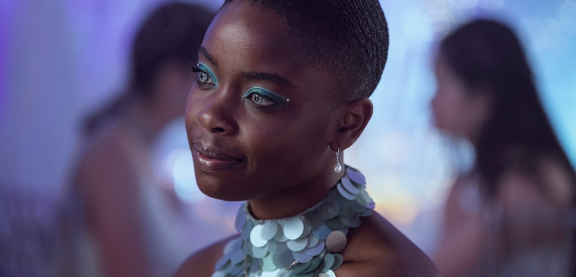
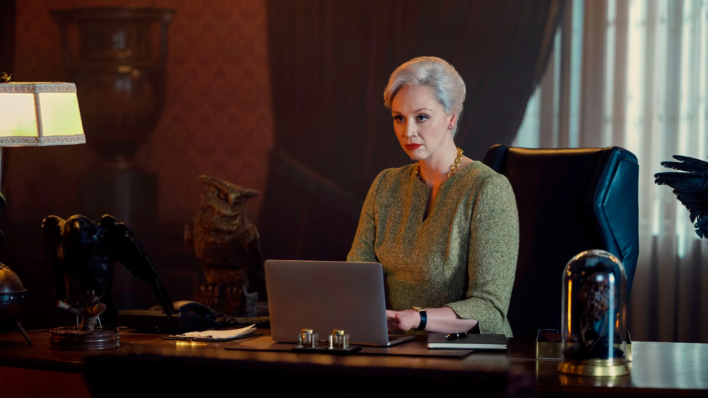
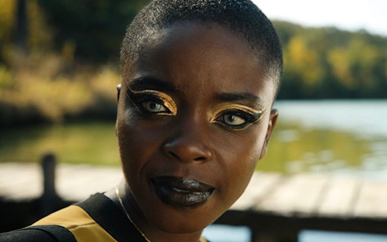
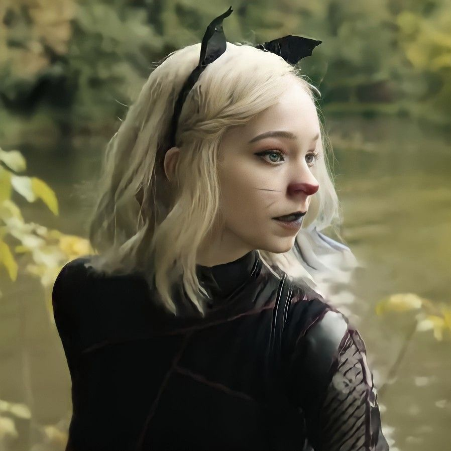